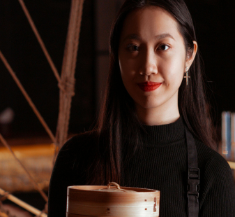

.png)

Sobre o restaurante
O Restaurante boa-prosa oferece uma experiência gastronômica
acolhedora e intimista no coração da cidade. Com uma decoração
charmosa e um ambiente familiar, é o local perfeito para uma refeição
descontraída. O cardápio, cuidadosamente elaborado, destaca pratos
caseiros preparados com ingredientes frescos e locais. O atendimento
atencioso e amigável completa a experiência, fazendo com que cada visita
seja memorável. Ideal para quem busca qualidade e conforto em um só lugar.
Sobre A Chefe
Larissa Alcântara, com 22 anos, é a talentosa cozinheira do restaurante Boa-Prosa.
Desde jovem, Larissa tem uma paixão pela culinária que a levou a se formar em uma
prestigiada escola de culinária. No Boa-Prosa, ela é conhecida por sua criatividade e
técnica, transformando ingredientes simples em pratos sofisticados. Sua dedicação e
talento fazem dela uma peça-chave no sucesso do restaurante, prometendo uma
experiência gastronômica única para os clientes.
BOA-PROSA
Sobre o restaurante
O Restaurante Boa-prosa oferece uma experiência gastronômica acolhedora e intimista no coração da cidade. Com uma decoração charmosa e um ambiente familiar, é o local perfeito para uma refeição descontraída. O cardápio, cuidadosamente elaborado, destaca pratos caseiros preparados com ingredientes frescos e locais. O atendimento atencioso e amigável completa a experiência, fazendo com que cada visita seja memorável. Ideal para quem busca qualidade e conforto em um só lugar.

Sobre A Chefe
Larissa Alcântara, com 22 anos, é a talentosa cozinheira do restaurante Boa-Prosa. Desde jovem, Larissa tem uma paixão pela culinária que a levou a se formar em uma prestigiada escola de culinária. No Boa-Prosa, ela é conhecida por sua criatividade e técnica, transformando ingredientes simples em pratos sofisticados. Sua dedicação e talento fazem dela uma peça-chave no sucesso do restaurante, prometendo uma experiência gastronômica única para os clientes.
